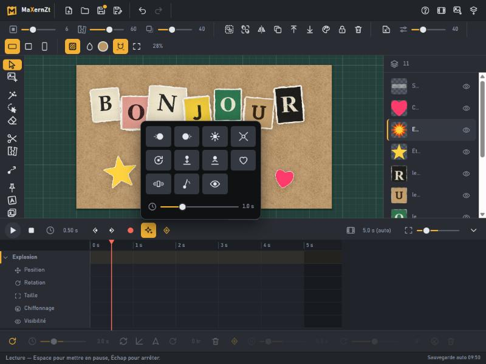
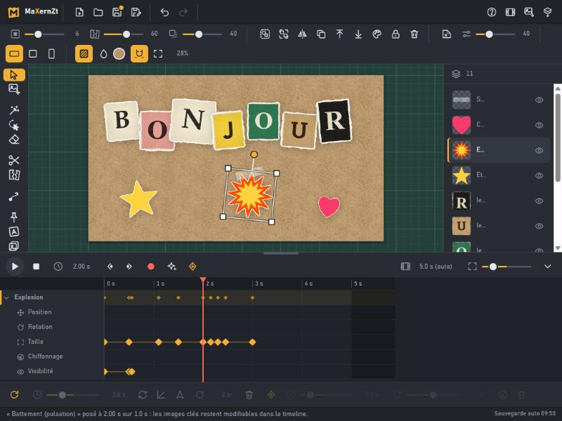
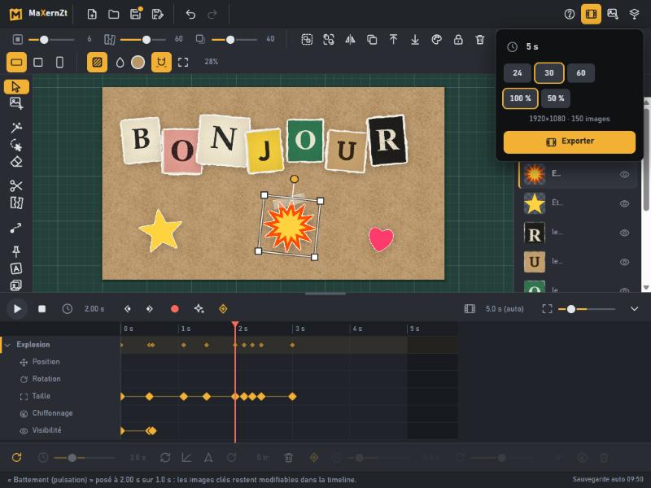

Animer votre collage
Chaque élément de votre collage peut bouger indépendamment. Voici les trois façons d'animer, de la plus simple à la plus fine, puis l'export en vidéo.
Le principe : la timeline
En bas de l'écran, la timeline affiche une ligne par élément, qui se déplie en cinq pistes : position, rotation, taille, chiffonnage, visibilité. La tête de lecture (rouge) marque l'instant courant : cliquez ou glissez sur la règle pour la déplacer. ▶ ou Espace lance la lecture, Échap l'arrête.
Tirez le haut du panneau vers le haut pour agrandir la timeline.
Les effets prêts à l'emploi
Sélectionnez un élément (par exemple une lettre), placez la tête de lecture à l'instant voulu, puis ouvrez les étincelles. Choisissez la durée avec le curseur et cliquez un effet : fondu, surgit (zoom avec rebond), arrive en tournant, chute et rebonds, rebondit, battement, tremble, balancier, clignote.

Pour animer un mot lettre par lettre, répétez l'effet sur chaque lettre en décalant l'instant de départ de 0,1 à 0,2 s.
Lire et retoucher les images clés
Un effet crée des images clés (les losanges). Vous pouvez les glisser pour les décaler (elles se collent aux autres ; Maj pour un déplacement libre), en sélectionner une pour régler son instant, sa valeur et son interpolation (constante, douce, palier), ou la supprimer avec Suppr.

Les flèches à côté de l'enregistrement sautent à l'image clé précédente ou suivante (Alt+← / →).
Enregistrer vos gestes
Cliquez le point rouge (enregistrement automatique), placez la tête de lecture, puis déplacez, tournez ou agrandissez l'élément : une image clé se crée toute seule à cet instant. Déplacez la tête, bougez encore : MaXernZt interpole entre les deux.
Dessiner une trajectoire
Appuyez sur P, sélectionnez un élément (ou un groupe dans le panneau), puis tracez son chemin à main levée. Il le parcourt en boucle ou en aller-retour. La barre du bas règle la durée, la vitesse (constante ou douce), l'orientation dans le sens du trajet, la rotation continue et les pauses, avec chiffonnage en boule si vous le souhaitez.
Exporter la vidéo
L'icône pellicule ouvre l'export : durée, 24, 30 ou 60 images par seconde, taille 100 % ou 50 %. « Exporter » produit un fichier MP4 (ou WebM selon le navigateur). La vidéo n'a pas de piste audio.

Chrome et Edge sont recommandés pour l'export vidéo.